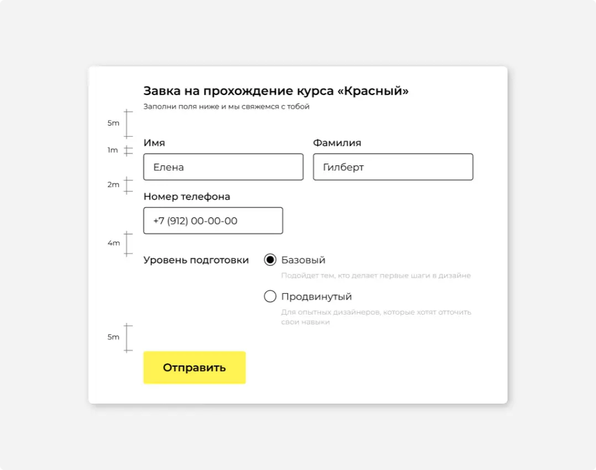

#1
Отступы
Делайте отступы, кратные модулю. Модуль в 8 пикселей — базовая размерная единица для интерфейсов CURSA.
Чтобы облегчить восприятие экрана, выбирайте отступы, которые отличаются достаточно сильно — 1, 2, 4 и 8 модулей (8, 16, 32 и 64px). Используйте минимальное количество разных отступов в рамках одного экрана.
Сохраняйте ритм отступов, но если рядом стоят элементы с разным визуальным весом, элементу тесно и хочется добавить воздуха — сделайте исключение и увеличьте отступ до этого элемента.
Допустимо использовать шаг в полмодуля в отступах до 40px. Например, внутри составных элементов, таких как чекбокс, или в одном из размеров кнопок:
#2
Выравнивание
Выравнивайте элементы форм или таблиц по базовой линии текста:
Чтобы показать вложенность элементов, сделайте смещение, кратное модулю:
Хорошо, когда количество вертикальных или горизонтальных направляющих минимально в рамках одного смыслового блока — так макет выглядит аккуратнее и проще. Но следите за тем, чтобы не возникало ложных связей между выровненными объектами.